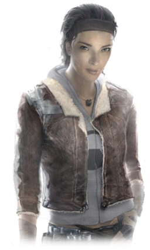
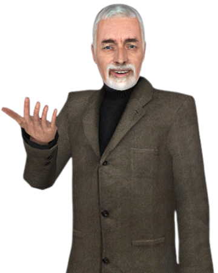

Assim como no primeiro Half-Life, a história tem uma participação significativa na compreensão do ambiente em que se passa a história. O personagem principal, Gordon Freeman, continua não falando sequer uma palavra durante todo o jogo. Mesmo assim, os diálogos ganharam maior ênfase e alguns são extremamente importantes para saber o objetivo em determinado momento, ou no decorrer de um período.
O misterioso G-Man retorna, explicando a Freeman apenas que há uma nova missão, e que seus feitos são determinantes para a conjuntura social/econômica de um governo. Então Gordon se vê dentro de um trem, muito deteriorado e envelhecido, indo para City 17, o cenário principal do jogo. Tudo indica que desde o final de Half-Life, G-Man manteve Gordon preso no espaço/tempo, já que aproximadamente 20 anos se passaram desde o incidente em Black Mesa,[9] e Gordon não envelheceu (Fato que explica a teoria de que o mesmo estava aprisionado na espaço/tempo).
Dr. Breen, antigo administrador do complexo de pesquisas Black Mesa (situado no Novo México), é atualmente o governador e representante dos humanos perante os Combine, raça alienígena responsável pela escravidão e controle dos habitantes da Terra. Noventa por cento do poder bélico dos Combine é composto por tecnologia terrestre, modernizada e modificada, e soldados humanos, lobotomizados e com melhoramentos cibernéticos.
Após o acidente conhecido como "Resonance Cascade", ou a "Cascata de Ressonância" no complexo de pesquisas Black Mesa, localizado no deserto do Novo México, diversos portais por todo o globo começaram a se formar, dando abertura para outros seres extraterrestres invadirem o planeta. Com a morte de Nihilanth, o líder da raça Xen, derrotado por Gordon Freeman no final de Half-Life, teve início uma cadeia de eventos que iria destruir toda a humanidade.
Ao que parece Nihilanth tinha o poder de manter os portais abertos e/ou fechados, dependendo de seus interesses, e com sua destruição o controlo dos mesmos se tornou insustentável e descontrolado, provocando a tempestade dos portais.
A eliminação de Nihilanth atraiu a atenção dos Combines (Aliança, em português), que, como o nome indica, é o aglomerado de várias espécies de extraterrestres. O principal objetivo desta raça autoritária, totalitária, parasitária e ditatorial, é atacar planetas e iniciar uma invasão em massa, utilizando antigas tecnologias de outros planetas, combinadas com a tecnologia do planeta em questão, transformando seus habitantes em soldados ou escravos.
A Guerra das 7 Horas foi um evento causado de propósito por Gman para dominar o planeta Xen como mostrado no final do Half-Life original, apesar de só parecer um acidente em Black Mesa. Outras partes que indicam isso são no final do Half-Life, no início do Half-Life 2 : Episode One, e no final do Episode Two, sob as falas de Gman e Eli Vance.O planeta Xen (como dito por Gman) estava sob controle do governo dos Estados Unidos, mas pelo que parece os Combines tinham alguma relação com Xen, de fato que Nihilant se parece um pouco com os Combine Advisors, personagens que aparecem em Episode Two.Os Combines invadem, e observando este evento como uma oportunidade única, o ex-administrador de Black Mesa, Dr. Wallace Breen, negociou com os Combines a rendição de todos os governos, decretando-se oficialmente o representante direto dos humanos perante os Combines.
Como de praxe na indústria de jogos eletrônicos, diversas modificações foram feitas desde o início dos testes com a versão beta do jogo. De acordo com os produtores, o jogo deveria ter tido um tom muito mais sombrio, mórbido e negro, do que a versão atual. Durante o decorrer das fases o jogador poderia ver de forma explícita toda a destruição dos recursos naturais do planeta. Portais dimensionais em forma de redemoinhos, sugando toda a água dos oceanos, gigantescas turbinas substituindo o oxigênio por toxinas nocivas a raça humana, entre outras coisas. Apesar de não estarem presentes, as consequências dessa ações podem ser observadas, mesmo que de forma discreta no decorrer do jogo.
Por exemplo, na fase "Highway 17", quando se chega no porto, podemos ver os navios atracados nos pequenos desertos, e a diferença entre o nível de água agora, e as marcas de antigamente nas paredes do porto. Outro exemplo visível é a cor do céu, no transparecer de um por do sol, em clara referência a falta de oxigênio, e presença de gases estranhos.
No início do jogo pode-se ouvir o Dr. Wallace Breen lendo algumas cartas que os habitantes de City 17 lhe enviaram. Um dos temas é o "Supression Field" (Campo de supressão). Pelo que foi descrito pelo Dr. Breen, este campo impede os humanos de reproduzirem.
Os Combines implantaram este sistema para evitar a proliferação da raça humana, diminuindo drasticamente as chances de uma rebelião, ou da criação de uma resistência.
Pouco se sabe sobre o "Suppression Field", podendo ser um campo invisível inibidor do apetite sexual, um campo radioativo que destrói os óvulos ou até uma repressão tradicional por parte da unidade "Civil Protection" (Proteção civil). Na expansão podemos notar que esse bloqueio se dá pela inibição de determinadas cadeias proteicas, que anulam qualquer tentativa da fecundação do óvulo.
Por essas e outras razões é possível observar a ausência de crianças e adolescentes no decorrer do jogo. A personagem mais jovem é Alyx Vance.
Em várias oportunidades, de preferência no começo do jogo, diversos brinquedos infantis estão espalhados pelo cenário, como playgrounds, bolas, bonecas e até bicicletas, todos envelhecidos com sinais de ferrugem e sujeira, mostrando que não são utilizados há muito tempo.
A tecnologia neste período torna-se evidente a absorção parasitária dos Combines. A denominação de parasita é "...Organismos que vivem em associação com outros aos quais retiram os meios para a sua sobrevivência, normalmente prejudicando o organismo hospedeiro, um processo conhecido por parasitismo...", isto é, um ser vivo que se utiliza da energia ou qualquer outra coisa de um outro ser vivo, para benefício próprio.
Portanto todos esses anos da ditadura Combine na Terra, se utilizando de nossa tecnologia, deixa claro que em certo ponto a tecnologia terrestre estagnou no tempo. As armas, apesar de mais evoluídas do que antigamente, continuam utilizando munição nove milímetros. Claro que as armas de plasma são algo inviável na atualidade, mas mesmo assim, é visível um toque rústico nas armas. Normalmente, no futuro em que se passa os eventos do jogo, uma arma como a Gravity Gun não seria algo tão inovador, e sem dúvida que a munição das armas de fogo também não seria antiga como nove milímetros. As pistolas e metralhadoras do começo do jogo tem um design antigo, da época em que se passava o primeiro jogo.
Veículos terrestres também são outro ponto a ser observado. Ainda que com uma carcaça futurista, eles ainda utilizam rodas, e apesar de serem movidos a energia elétrica, não tem células muito duradouras, como pode ser observado nas costas próximas a New Little Odessa, quando diversos veículos Combines estão sendo abastecidos por campos elétricos.
Muitas das informações acima são especulativas, mas através de uma visão ampla do ambiente em que se passa o jogo, incluindo todos os objetos, bem como as localidades, é verossímil afirmar que a tecnologia terrestre parou no tempo, mesmo que para nós sendo o futuro, para eles, é um passado que vem se arrastando por um tempo que parece ser infinito.
A arquitetura ambiental e estrutural do jogo é similar a uma Europa antiga, pós-União Soviética. Um tom "art-deco" de similaridade entre as estruturas, bem como o tom bege adotado em quase toda a cidade contrasta com as enormes "construções fascistas", com pouca paisagem, muito concreto, poucas janelas, poucas cores, e muito ferro. No início do jogo este contraste é visto quando você sai da estação de trem. Os prédios com pouca estatura combinam com uma estação de trem, provavelmente do final do século XIX, totalmente detalhada com ferro e concreto. Próximo ao final do jogo, num maciço ataque de "Striders", o objetivo é infiltrar uma estrutura militar dos "Combines", onde se encontra um portal para dentro da Cidadela. Esta estrutura é enorme, plana, com poucas janelas, similar aos Parlamentos da antiga União Soviética.
Tudo isso, e outros detalhes, indicam que o jogo se passa numa região da Europa, indefinida. Mas durante o processo do jogo você deverá encontrar um líder da resistência num local chamado "New Little Odessa"."New Little Odessa" é um bairro em Nova Iorque que acolheu os Ucranianos que fugiram da Ucrânia durante a Segunda Guerra Mundial.
Na Ucrânia, Odessa era uma enorme região costeira que tinha, e tem até hoje, os maiores e melhores faróis marítimos. Assim tal como os italianos, quando de sua chegada aos Estados Unidos, criaram o bairro "Little Italy", os Ucranianos criaram o bairro Little Odessa. O local do jogo ser chamado de New Little Odessa acusa que esta região é o antigo bairro, renovado para acolher a resistência. O único porém é que o ambiente em que se passa o jogo não é um bairro populoso e urbanizado, como a Little Odessa real, mas sim similar à costa de Odessa, na própria Ucrânia. Outro ponto a ser observado é que existem placas escritas com o alfabeto cirílico, sendo encontradas principalmente nos arquivos de textura do jogo.
Entre outros fatores, apesar de especulativos, pode ser garantido que o planeta Terra em que se passa o jogo não é exatamente o planeta Terra em que vivemos, apesar das inúmeras coincidências e similaridades com as localizações e ambientes.
Half Life 2 foi lancado oficialmente nma STEAM, e agora pra jogalo, você precisa ter uma conta na STEAM, e conexao com a internet.
A engine que o jogo foi feito tambem foi atualizada, trazendo uma fisica super realista, e pricipalmente as expressoes faciais adicionadas aos personagens, que era algo incomum para a epoca.
Alyx Vence

Filha de Eli Vence, ajuda Gordon em sua jornada.
Dr Breen

CEO da Black Mesa, Lider da Cidade 17 junto dos Combine.